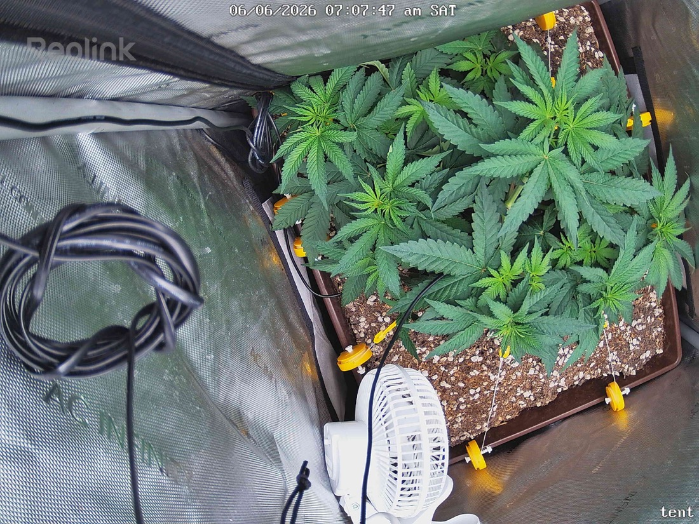

← All reports
Jun 6, 2026
Sat Jun 6, 2026 — 7:07 AM

Prognosis
Daily check — June 6, 2026 (Day 3 of 12/12)
- What changed: Canopy looks marginally fuller and flatter — LST tie-downs are doing their job, you can see more even leaf distribution across the pot footprint vs. yesterday. Color is uniform medium-deep green, no new yellowing.
- Posture: Leaves are flat, slight upward praying tips on a few fans — healthy response to the 500 PPFD. No tacoing, no clawing, no droop.
- Stress signs: None visible. No burnt tips, no interveinal chlorosis, no pests or spotting. Soil surface looks appropriately damp from the June 1 bottom water — not soggy, not bone dry.
- Stretch watch: Day 3 of flip — stretch hasn't kicked in yet (normal, it usually shows day 4–7 and peaks ~week 2). Expect 1.5–2× height gain over the next 2–3 weeks.
- Phase check: Right on track. ~5.5 weeks from germ, topped + LST'd, just entered 12/12 — this is textbook timing for a photoperiod transition.
Your questions
- Light ramp: Hold 500 for 3–4 more days while she settles into 12/12. Then bump ~50 PPFD every 3–4 days watching for taco/bleach. Target 650–750 by end of stretch (~day 14), then 800–900 through mid-flower if leaves stay flat and dark. SF-2000 Pro in a 2×2 can push ~900+ at canopy but only worth it if you've got CO2 or rock-solid VPD; otherwise 750–850 is the sweet spot.
- Bud site estimate: Hard to count exactly from above, but I see roughly 8–14 viable main colas from the topping + LST spread, plus secondary sites filling in — call it 15–25 decent bud sites total.
- Yield estimate: Realistic range for a single well-trained photo in a 2×2 under an SF-2000 Pro is 2–4 oz dry (55–115g). Given your training, healthy veg, and no-till soil, ~3 oz (~85g) is a reasonable target. Push light + dial VPD and you could nudge toward 3.5–4.
Next actions
- No corrective action needed.
- Next water likely tomorrow or Mon (June 7–8) — check pot weight.
- Begin light ramp ~June 9–10.
Overall: Healthy, well-trained transition into flower — she's set up well for a strong stretch.